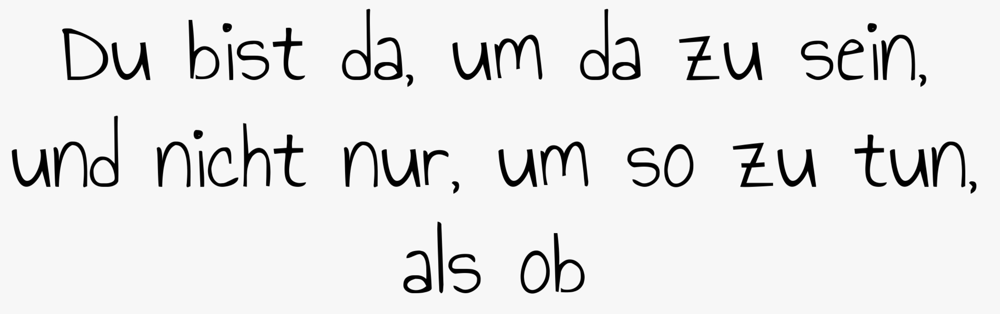
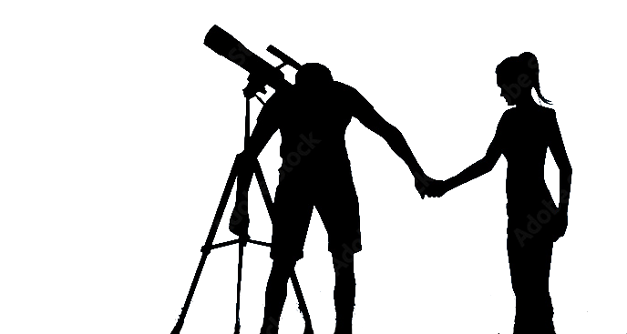

Was bin ich?
Ich interessiere mich sehr für philosophische Fragen über das Dasein. Ich habe schon viel darüber
nachgedacht, warum ich bin und warum die Welt ist. Mir ist klar, dass es darauf keine wirkliche Antwort
gibt. Aber die Konsequenz, die ich aus diesen Fragen ziehe, ist, dass es für mich etwas Bemerkenswertes
ist,
da zu sein. Denn der Undurchdringbarkeit aller Fragen rund um die eigene Existenz zum Trotz stellt sich
eine Tatsache für mich doch klar heraus: Alles in allem genommen scheint es mir recht sonderbar,
dass die Welt so ist wie sie ist und wir darin leben können. Und aus diesem Empfinden der Sonderbarkeit
heraus ist es für mich letzlich
wichtig, etwas zu tun, durch das ich ausdrücken kann, dass ich in dieser Welt bin. Das kann die
Beschäftigung mit einem Thema sein, für das ich mich interessiere, das Malen eines Bildes, Schreiben
eines Gedichtes, etc.
Diese Website ist auch ein solches Projekt. Mein Ziel mit dieser Website ist es, die verschiedenen
Dinge, an denen ich in der Vergangenheit gearbeitet habe, zu sammeln und zu präsentieren. Und
gleichzeitig soll diese
Website auch ein kleines Kunstwerk werden. Für dich soll diese Website ein Ort zum Stöbern sein. Ich
hoffe
du findest etwas, was dich interessiert oder was du schön finden kannst.
Kunstwerke
Gedichte
Kurzgeschichten
Philosophie

